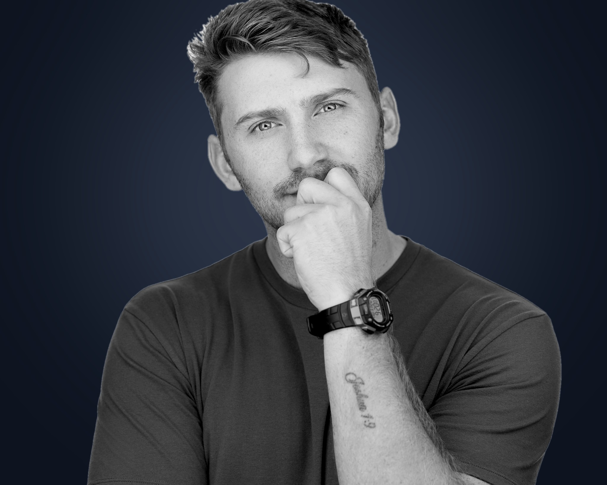

Successful men on how they see success, and redefining what it means to be worthy.

We sit down with successful men to learn how they view success, and to understand and redefine what worthiness really is. No performance, no hype: honest talk about identity, worth, shame, brotherhood, and the life underneath the life.
Brett Fleming, Partner & VP at 4610, on ambition, faith in Jesus, and building a life that's whole, not just successful.
Keegan Martin, former real estate broker turned outreach director, on worth, identity, and what God says about you.
Ford Buckner on identity, success, and where worth really comes from.
James Collins on letting go of control, and the freedom on the other side of surrender.
Mark Lichty on where a man pours his time, energy and heart, and what's really worth it.
“Dignity isn't a slogan. It's how a man lives when nobody's watching.”The Billy Metz Show
The conversations go where real life goes: the heavy stuff, and the stuff that makes men laugh around a table.
The deal closed, the title came, the house got bigger. So why does it still feel like it's not enough? We talk about the gap between achievement and worth.
Shame, fear, pride, numbness. The emotions men carry quietly, and how they keep us at arm's length from God and from the people we love.
How each guest came to know he is God's: loved before he performed anything, fully known, and called by name.
Most of us expect faith to look like a growth chart: one moment, then a straight line up. It rarely works that way. Conversion happens in stages, across different seasons of life. It moves forward, sideways, back, and forward again.
Read the book of Acts. Saul is stopped on the road to Damascus (Acts 9). An Ethiopian official is reading Isaiah in his chariot (Acts 8). Cornelius, a Roman officer, is already praying when Peter arrives (Acts 10). Lydia is listening by a river (Acts 16). Different men and women, different moments, different paths.
A winding road is still a road home. Wherever you are on it, you're not behind.
A free, honest look at the life underneath the life. Answer 48 questions, get your score by email and on your dashboard, and see clearly where dignity is holding, and where it's slipping.
Your score isn't a measure of how holy or how good you are. It's a snapshot of where you are today, and where you might want to go.
Billy did the thing you're told will finally make you somebody. He became very successful: top of his field, money handled, the results to prove it. From the outside, it looked like he'd arrived.
Then he found out what success can actually give you: financial stability. And nothing else. It couldn't hand him worth. It couldn't tell him who he was. It couldn't make him loved. He had been chasing in achievement what was never for sale and never for earning, because it had already been given.
That's sonship. At Jesus' baptism, before a single miracle, before the crowds, before the cross, the Father's voice broke open the sky: “This is my beloved Son, in whom I am well pleased.” Beloved first. Works second. Billy lives from that same word spoken over him: he is a deeply beloved son of the Most High God.
The Bible calls it adoption: “you have received the Spirit of adoption as sons, by whom we cry, ‘Abba! Father!’” (Romans 8:15). “See what kind of love the Father has given to us, that we should be called children of God; and so we are” (1 John 3:1). His worth was settled by sonship before his success ever showed up. Success could only ever add money, never identity.
That's why Billy hosts The Billy Metz Show: Living With Dignity. Not to perform, and not to prove. From sonship, he sits down with successful men to learn how they view success, and to understand and redefine what worthiness is.
“Success gave me stability. Sonship gave me a name. I am a deeply beloved son of the Most High God.”▶ Watch the Show